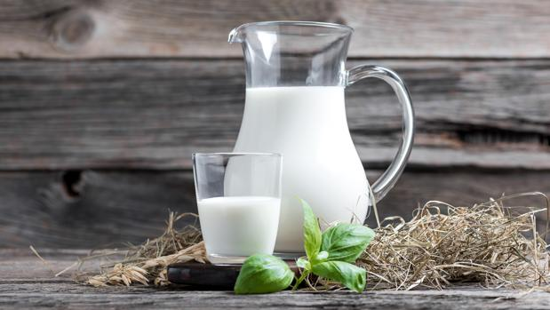

Volver al menu
Macarrones
Ingredientes
- 250 g de macarones
- 2 tazas de queso cheddar rallado
- 1 taza de leche
- 2 cucharadas de mantequilla
- 2 cucharadas de harina
- 1/2 cucharadita de sal
- 1/4 de cucharadita de pimienta negra
- 1/4 de cucharadita de mostaza en polvo (opcional)
- 1/4 de taza de pan rallado (opcional, para gratinar)
Paso a paso
- Cocina los macarrones siguiendo las instrucciones del paquete. Por lo general, deberán hervirse en agua con sal durante 8-10 minutos hasta que estén al dente. Luego, escúrrelos y reserva.

- Mientras se cocinan los macarrones, en una cacerola grande, derrite la mantequilla a fuego medio. Luego, agrega la harina y revuelve constantemente durante 2-3 minutos para hacer un roux. Esto ayudará a que la salsa se espese.

- Vierte la leche en la cacerola gradualmente mientras continúas revolviendo para evitar la formación de grumos. Cocina la mezcla durante unos minutos hasta que espese.

- Agrega 1 y 1/2 tazas de queso cheddar rallado a la mezcla de leche y revuelve hasta que el queso se derrita y la salsa quede suave.

- Condimenta la salsa con sal, pimienta y mostaza en polvo (si lo deseas). La mostaza en polvo agrega un toque interesante al sabor del queso.

- Mezcla los macarrones cocidos y escurridos con la salsa de queso en la cacerola.

- Si lo deseas, puedes verter la mezcla en una fuente para horno y espolvorear el queso cheddar restante y el pan rallado por encima para gratinar. Luego, hornea a 180°C durante unos 15-20 minutos o hasta que la parte superior esté dorada y burbujeante.

- Sirve caliente y disfruta tus macarrones con queso caseros.

Resultado final
Volver al inicio